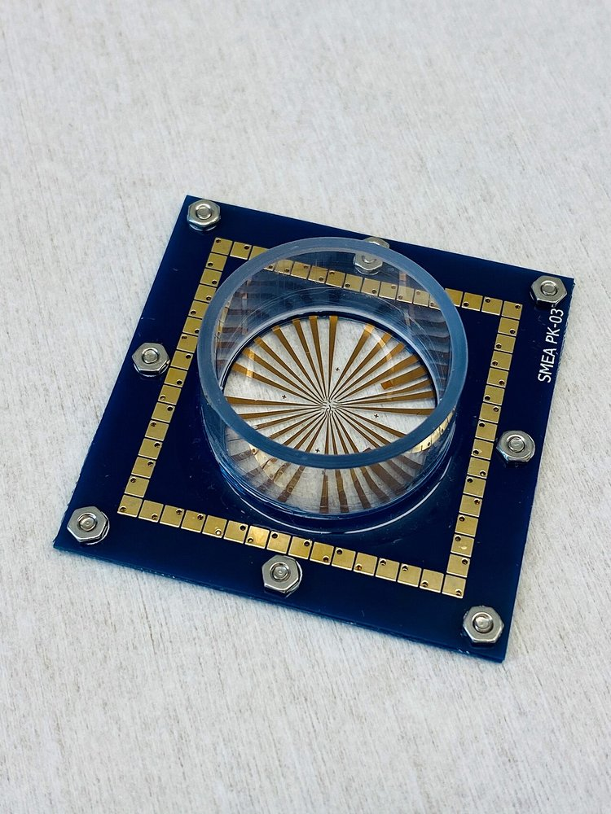
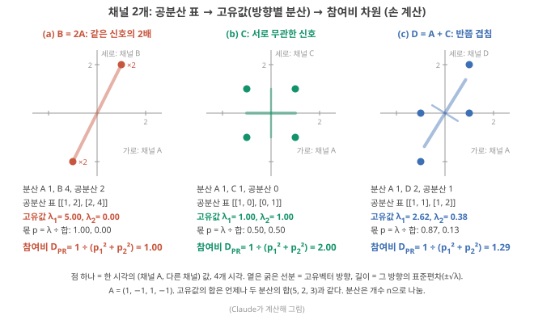
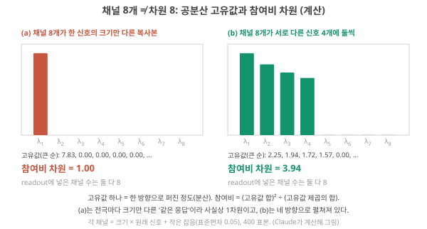
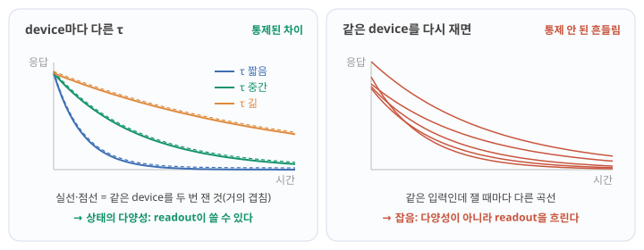
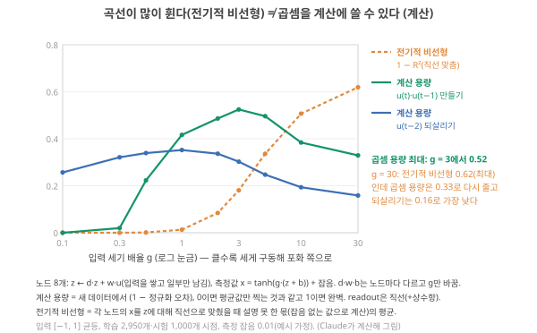
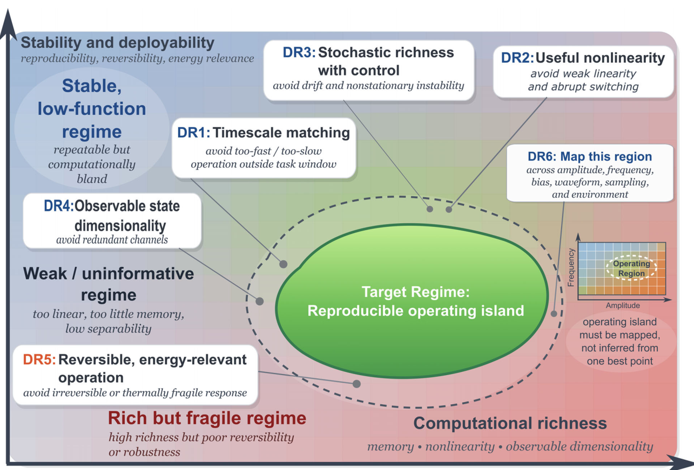

Day 26. 차원과 비선형성의 평가
Phase 3 · 좋은 시스템이란 무엇인가
이번 질문 채널 수와 실제 차원은 왜 다르고, 계산에 쓰이는 비선형은 무엇으로 평가하나?
왜 배우나 '전극 16개' 같은 근거에서 채널이 독립인지, 계산용 비선형이 있는지 확인한다.
오늘의 장면 채널별 상태 표 → 공분산·고유값 → 참여비 차원 (Σλ)²/Σλ² → D_PR + 두 비선형 곡선
오늘 반드시 채널 수는 차원이 아니다(같은 신호 16개면 차원 1). 전기적 비선형 최대 조건이 계산에 최선인 것은 아니다.
나중에 봐도 됨 PCA 이름 · 세기 실험 곡선 숫자 · 원문 시뮬레이션 설정 · 고조파
넘어가는 기준 '오늘 반드시'를 내 말로 말할 수 있으면 충분합니다.
이후 쓰이는 곳 Day 29–30 기준선 비교 · Day 33–34 device 간 편차 · Day 41–46 화학 구조와 응답 · Day 55–56 다전극 주장
지난 학습 복습
지난 학습 단위(Day 25 · 분리·rank·일반화: 상태는 얼마나 다른가)의 핵심을 다른 예로 확인합니다. 고르는 즉시 맞았는지와 이유가 보입니다. 틀려도 아래 학습자료는 그대로 열려 있고, 틀린 문제에는 다시 볼 곳이 붙습니다.
학습자료
5. 채널 수 ≠ 차원: 공분산 고유값과 참여비 차원
끝나면 할 수 있는 것. "전극 16개 = 상태 16개"가 왜 틀릴 수 있는지, 채널 2개의 공분산 표와 그 고유값을 손으로 구해 참여비 차원까지 가는 법, rank·참여비가 각각 말해 주는 것과 말해 주지 않는 것, 그리고 device 간 편차가 다양성을 늘리는 조건을 말할 수 있다.
왜 필요한가. device 논문은 reservoir의 크기를 흔히 "전극 16개", "virtual node 50개"(time multiplexing으로 만든 노드), "상태 벡터 길이 120"(readout에 넣는 숫자의 개수)으로 적습니다. Stepney도 reservoir의 계산 능력이 관측 가능한 노드 수에 달려 있다고 씁니다. 입력이 고차원 공간으로 투영되고, 선형 출력층이 클래스를 가를 수 있을 만큼의 차원이 관측되어야 하기 때문입니다. Stepney 2024, p.673 ★ 그런데 ‘rank’ 구간에서 봤듯 "관측한 숫자의 개수"와 "진짜로 다른 방향의 수"는 다릅니다. 전극 16개가 모두 같은 신호를 크기만 다르게 읽고 있다면 방향은 하나입니다.

함께 오르내리는 정도와 참여비 차원
무엇을 재료로 쓰나. rank는 기준(몇 %)을 정해야 하고 방향이 "있다/없다"만 셉니다. 전극이 많은 device에서 "실제로 몇 개 방향이 의미 있게 움직이나"를 기준 없이 연속값으로 얻으려면, 채널들이 함께 어떻게 흔들리나를 봅니다. 재료는 측정한 상태 표입니다. Row 하나가 채널(전극·virtual node) 하나, column 하나가 한 시각(또는 한 입력)의 상태입니다. 추상적인 정의보다 작은 예를 먼저 봅니다. 채널 둘, 시각 넷짜리 표입니다.
작은 예 먼저: 전극은 둘인데 사실 한 방향. 채널 A가 네 시각에 (1, −1, 1, −1)을, 채널 B가 (2, −2, 2, −2)를 냈다고 합시다. 시각마다 (A 값, B 값)을 평면의 점 하나로 찍으면 (1, 2), (−1, −2), (1, 2), (−1, −2)이고, 점이 모두 직선 'B = 2A' 위에 놓입니다. 숫자는 두 개씩 읽었지만 점들이 움직일 수 있는 방향은 그 직선 하나뿐이라, readout에게는 방향이 하나입니다(‘rank’ 구간 rank 예의 \(s_2 = 2 s_1\)과 같은 상황). 반대로 A와 따로 움직이는 채널 C = (1, 1, −1, −1)과 짝지으면 점이 (1, 1), (−1, 1), (1, −1), (−1, −1), 정사각형의 네 꼭짓점에 퍼져 두 방향을 다 씁니다. 이 구간의 공분산·고유값·참여비 차원은 "점들이 몇 개의 방향으로, 얼마나 고르게 퍼졌나"를 숫자로 적는 도구입니다.
셋째 채널 D = A + C = (2, 0, 0, −2)를 A와 짝지어 점을 찍으면, 점들은 한 직선 위(방향 하나)와 정사각형(두 방향 고르게) 중 어느 쪽에 가까울까요, 아니면 그 사이일까요? 그림 6(c)를 보기 전에 예상해 보세요.
무엇을 볼지. 그림 6은 채널 A를 세 가지 다른 채널과 짝지은 것입니다. 점 하나는 한 시각의 (채널 A 값, 다른 채널 값)이고 시각은 넷입니다. (a)는 점이 한 직선 위에만(B = 2A), (b)는 정사각형의 네 꼭짓점에 고르게(C), (c)는 비스듬히 길쭉하게(D) 퍼져 있습니다. 지금은 점의 모양만 보세요. 아래 다섯 줄의 숫자(분산·공분산, 공분산 표, 고유값, 몫, 참여비)는 이어지는 문단에서 하나씩 계산합니다.

공분산 — 두 채널이 같이 움직이는 정도. 그림 6(a)처럼 두 전극의 신호가 시간에 따라 함께 오르고 함께 내리면 "같은 것을 보고 있다"는 뜻입니다. ★ 이것을 숫자로 잰 것이 공분산(covariance)입니다. 각 채널에서 평균을 뺀 뒤, 같은 시각의 두 값을 곱해 평균 냅니다. 같이 움직이면 양수로 크고, 반대로 움직이면 음수, 무관하면 0 근처입니다. 한 채널을 자기 자신과 짝지으면 공분산은 그 채널의 분산이 됩니다(분산·상관²). 여기서 '평균 낸다'는 개수 \(n\)으로 나눈다는 뜻입니다(표본에서 추정할 때는 \(n-1\)로 나누는 것이 Day 23–24의 기본이지만, 아래 참여비 차원은 비율이라 어느 쪽으로 나눠도 값이 같습니다). 위의 예로: 채널 A (1, −1, 1, −1)와 B (2, −2, 2, −2)는 평균이 둘 다 0이고, 곱은 (2, 2, 2, 2)이고 평균 2. B는 A를 두 배 한 것이라 완전히 같이 움직입니다.
공분산 표. 채널이 둘이면 짝은 (A, A), (A, B), (B, A), (B, B) 넷이고, 이것을 2 × 2 표로 적습니다. 대각선(왼쪽 위·오른쪽 아래)은 각 채널의 분산, 대각선 밖은 두 채널의 공분산입니다(같은 값이 두 번). 위 예는 A의 분산 1, B의 분산 4, 공분산 2이므로 공분산 표는 \(\begin{pmatrix} 1 & 2 \\ 2 & 4 \end{pmatrix}\)입니다. 채널이 \(N\)개면 \(N \times N\) 표가 됩니다.
고유값 — 서로 무관한 방향별 퍼짐. 그림 6의 옅은 굵은 선분이 점들이 퍼진 방향입니다. 이 공분산 표의 고유벡터(고유벡터·고윳값·spectral radius: 표를 곱해도 방향이 안 바뀌고 몇 배만 되는 방향)가 점들이 퍼진 방향이고, 고유값(eigenvalue) \(\lambda\)(Day 15–16의 '고윳값')가 그 방향으로 잰 분산입니다. 고유벡터들은 서로 직각이고, 그 방향들로 다시 적으면 방향끼리의 공분산이 0이 됩니다. 그래서 '서로 무관하게 움직이는 방향들'이라고 부르고, 이 방향들을 주성분(principal component)이라고도 합니다.
큰 것부터 \(\lambda_1, \lambda_2, \ldots\)로 적습니다. Liang은 KR과 비슷한 목적으로 "상태 변수의 90% 이상을 설명하는 주성분의 수", 즉 서로 얽히지 않은 동역학의 수를 쓰기도 한다고 소개합니다. Liang 2024, p.200 2 × 2 표를 \(\begin{pmatrix} p & q \\ r & s \end{pmatrix}\)로 적으면, 고유값은 Day 15–16의 2차방정식 \(\lambda^2 - (p + s)\lambda + (ps - qr) = 0\)으로 손으로 구할 수 있습니다(여기의 \(s\)는 표의 오른쪽 아래 칸이고, ‘rank’ 구간의 상태 \(s_1\)과는 다른 기호입니다).
단계 1 — 같은 신호의 두 배(A와 B = 2A). 표의 \(p = 1\), \(q = r = 2\), \(s = 4\)를 넣으면 \(\lambda^2 - 5\lambda + (4 - 4) = 0\), 곧 \(\lambda(\lambda - 5) = 0\) → 고유값 5와 0. 확인: 방향 \((1, 2)/\sqrt5\)로 비추면 시각마다 그림자가 \((1 \cdot 1 + 2 \cdot 2)/\sqrt5 = \sqrt5\) 또는 \(-\sqrt5\)라 분산 5. 그에 직각인 \((2, -1)/\sqrt5\)로 비추면 \(2 \cdot 1 - 1 \cdot 2 = 0\)이라 언제나 0, 분산 0. 점들이 한 직선 위에만 있습니다.
단계 2 — 서로 무관한 두 신호(A와 C = (1, 1, −1, −1)). C의 분산 1, A와의 곱 (1, −1, −1, 1)의 평균 0 → 공분산 0. 표 \(\begin{pmatrix} 1 & 0 \\ 0 & 1 \end{pmatrix}\), 고유값 1과 1. 점들이 정사각형의 네 꼭짓점에 고르게 퍼져 어느 방향으로 재도 분산이 1입니다.
단계 3 — 반쯤 겹치는 두 신호(A와 D = A + C = (2, 0, 0, −2)). D의 분산 (4 + 0 + 0 + 4)/4 = 2, A와 D의 곱 (2, 0, 0, 2)의 평균 1 → 표 \(\begin{pmatrix} 1 & 1 \\ 1 & 2 \end{pmatrix}\). \(\lambda^2 - 3\lambda + 1 = 0\) → \(\lambda = (3 \pm \sqrt5)/2\) = 2.62와 0.38. 점들이 길쭉하게 퍼져 한 방향이 대부분을 차지하고 다른 방향이 조금 있습니다.
확인 — 합은 그대로. 세 경우 모두 고유값의 합 = 채널 분산의 합입니다(5 + 0 = 1 + 4, 1 + 1 = 1 + 1, 2.62 + 0.38 = 1 + 2). 고유값은 총 흔들림을 바꾸지 않고 직각 방향들로 나눠 적을 뿐입니다. ‘rank’ 구간 특이값 단계의 "72를 방향들이 나눠 갖는다"와 같은 그림이고, 실제로 평균을 뺀 채널 × 시각 표의 특이값을 제곱해 시각 수로 나누면 이 고유값이 됩니다(단계 1: 표의 숫자 제곱합 4 + 16 = 20, ÷ 4 = 5). 계산
참여비 차원 — 작은 예에서 먼저. 고유값 목록을 "실제로 몇 개의 방향이 의미 있게 참여하나"라는 숫자 하나로 바꾸고 싶습니다. 기준(몇 %)을 정해야 하는 rank와 달리, 크기에 따라 가중한 연속값으로. 위 그림 6의 세 경우(고유값 (5, 0), (1, 1), (2.62, 0.38))로 해 봅니다.
- 고유값을 그 합으로 나눠 몫으로 바꿉니다. (5, 0) → (1, 0), (1, 1) → (0.5, 0.5), (2.62, 0.38) → (0.873, 0.127).
- 몫을 제곱해 더합니다. 1² + 0² = 1, 0.5² + 0.5² = 0.5, 0.873² + 0.127² = 0.762 + 0.016 = 0.778.
- 그 역수를 씁니다. 1 ÷ 1 = 1, 1 ÷ 0.5 = 2, 1 ÷ 0.778 = 1.29.
한 방향에 몰리면 1, 두 방향에 고르게 나뉘면 2, 그 사이면 그 사이 값입니다. 몫이 고를수록 제곱의 합이 작아져 역수가 커지기 때문입니다. 이 값을 참여비 차원(participation ratio, \(D_{PR}\))이라 합니다. 몫 \(\lambda_i / \sum \lambda\)를 풀어 고유값으로 다시 쓰면 다음 식입니다.
\[ D_{PR} = \frac{(\lambda_1 + \lambda_2 + \cdots)^2}{\lambda_1^2 + \lambda_2^2 + \cdots} \]
- 기호: \(\lambda_i\)는 \(i\)번째 고유값(그 방향의 분산). 분자는 합의 제곱, 분모는 제곱의 합.
- 단위: 무차원(분자·분모 모두 분산의 제곱).
- 계산 순서: 고유값을 다 더해 제곱한다 → 각 고유값을 제곱해 더한다 → 나눈다. 위의 '몫 → 제곱의 합 → 역수'와 같은 값입니다.
- 결과의 뜻: 1이면 한 방향뿐, 채널 수와 같으면 모든 방향이 똑같이 참여.
식으로 확인. 세 경우는 (5, 0) → \(25/25 = 1\), (1, 1) → \(2^2/2 = 2\), (2.62, 0.38) → \(3^2/(6.85 + 0.15) = 9/7 = 1.29\)입니다. 채널은 셋 다 2개인데, 두 방향이 고르게 쓰일 때만 2가 됩니다. 채널 4개의 고유값이 (4, 0, 0, 0)이면 \(16 / 16 = 1\). (1, 1, 1, 1)이면 \(4^2 / 4 = 4\). (3, 1, 0, 0)이면 \(4^2 / (9 + 1) = 1.6\). 총 퍼짐(합 4)은 같아도, 한 방향에 몰려 있을수록 \(D_{PR}\)이 작습니다.
채널이 8개이면. 그림 7은 채널 8개를 readout에 넣는 두 device (a)(b)입니다. 막대 하나가 고유값 하나(큰 순서)이고, 아래 숫자가 위 식으로 계산한 참여비 차원입니다. 막대가 몇 개나 의미 있게 서 있는지 먼저 보세요.

논문의 근거. Singh은 이 구분을 보고 규칙으로 적습니다. ★ "물리 전극, 샘플링 시점, virtual node의 수는 독립 계산 상태의 수와 같지 않다." 그래서 관측 차원은 채널 수에서 추정하지 말고 측정한 상태 표에서 평가해야 하며, \(D_{PR}\)을 공분산 고유값 스펙트럼, 그리고 채널을 하나씩 늘려 가며 과제 성능을 재는 분석과 함께 보고하라고 권합니다. Singh 2026, p.13 같은 쪽에서 공분산 rank, 채널 짝 상관, 상호정보(mutual information), 참여비는 상태 공간의 서로 다른 성질을 재므로 같은 것으로 취급하지 말라고 씁니다. Singh 2026, p.13 설계 규칙으로는 "reservoir는 전극이 많다는 이유만으로 계산적으로 풍부하지 않다"Singh 2026, p.5, "전극이 많은 것은 서로 겹치지 않고 안정적이며 과제에 관련된 상태를 줄 때만 쓸모 있다"Singh 2026, p.6고 적습니다.
실제 사례로, 같은 글의 보고 관행 점검표는 128전극 나노와이어 device로 음성 숫자 분류를 한 연구에서 "성능이 전극 수십 개 뒤에 포화"했다고 정리합니다. Singh 2026, p.22
Rank와 참여비는 무엇을 말해 주고, 무엇을 말해 주지 않나. 같은 손 계산으로 세 가지를 확인할 수 있습니다(Claude 계산).
- Rank는 크기를 모른다. 채널 셋이 A, 2A, C이면 공분산 고유값은 5, 1, 0입니다(A·2A 쪽 5, C 쪽 1). Rank는 2, \(D_{PR} = 6^2/(25 + 1) = 1.38\). rank는 "방향이 둘"까지만, \(D_{PR}\)은 "하나가 다섯 배 크다"까지 말합니다.
- 참여비는 단위와 크기 맞추기에 따라 바뀐다. 무관한 A와 C는 \(D_{PR} = 2\)였습니다. 그런데 C만 10배 증폭해 읽으면(또는 C만 숫자가 10배 커지는 단위로 적으면) C의 분산이 100이 되어 고유값 100, 1 → \(D_{PR} = 101^2/10001 = 1.02\). 같은 device인데 숫자가 반으로 줍니다. 그래서 평균 빼기·크기 맞추기(정규화) 절차, 표본 수, 잡음 처리를 함께 적어야 합니다. Singh 2026, p.13
- 둘 다 그 방향이 쓸모 있는지는 모른다. 위의 C가 입력에 반응하는 신호이든, 입력과 무관한 잡음 채널이든 고유값은 똑같이 5, 1, 0입니다. 그 방향이 과제에 필요한 정보인지, 같은 입력을 다시 넣어도 재현되는지는 채널을 늘려 가며 잰 과제 성능과 반복 측정의 흔들림으로만 보입니다. Singh은 이 지표들을 서로 바꿔 쓸 수 없는 보완적 기술로 함께 보고하라고 하는데 Singh 2026, p.8, 13, 이 예가 그 이유를 보여 줍니다. 해석
| 지표 | 말해 주는 것 | 말해 주지 않는 것 | 오늘의 숫자 |
|---|---|---|---|
| 분리 거리 ÷ 잡음 (‘separation(분리)’ 구간) | 두 이력을 readout이 가를 여지 | 다른 이력 쌍의 사정, 과제와의 관련 | 0.25 ÷ 0.05 = 5 |
| Rank·KR (‘rank’ 구간) | 기준 이상으로 뻗은 방향의 수 | 방향마다의 크기. 기준을 바꾸면 값이 바뀜 | 특이값 8.44, 0.92, 0 → rank 2 |
| GR (‘generalization(일반화)’ 구간) | 비슷한 입력을 얼마나 한데 모으나 | 무엇을 "비슷"으로 볼지(과제가 정함) | 짧은 기억 1, 긴 기억 3 |
| \(D_{PR}\) (‘채널 수 ≠ 차원’ 구간) | 퍼짐이 몇 개 방향에 고르게 나뉘었나 | 그 방향이 신호인지 잡음인지. 단위·정규화에 따라 바뀜 | 고유값 5, 1, 0 → 1.38 |
(넷 모두 "readout이 새 데이터에서 실제로 답을 맞히는가"는 직접 재지 않습니다. 그것은 ‘비선형성 평가’ 구간 끝 표의 과제 정확도와 기준선(같은 readout을 원시 입력이나 단순한 방법에 쓴 성능, held-out 성능과 기준선) 비교가 맡습니다.)
편차는 다양성을 준다 — 조건부로. 같은 공정으로 만든 device라도 시간상수(변화가 원래로 돌아가는 시간의 척도, Day 2의 휘발성과 비휘발성)와 비선형성이 조금씩 다릅니다(device 간 편차). Liang은 이 편차가 상태의 풍부함을 "어느 정도" 늘리며, 편차가 너무 작은 device 묶음은 readout의 과적합 같은 문제를 일으킬 수 있다고 씁니다. Liang 2024, p.196 ‘rank’ 구간에서 같은 τ의 노드 셋이 rank 1이던 예와, 그림 7(a)에서 크기만 다른 복사본 채널의 \(D_{PR}\)이 1이던 예가 편차가 없을 때의 모습입니다.
같은 쪽에서 Liang은 나란히(병렬로) 놓인 여러 device의 기억 용량이 "누적되지 않고 대부분 겹친다"고도 씁니다. Liang 2024, p.196 다만 편차에는 대가가 있습니다. Device마다 다르면 한 device로 학습한 readout을 다른 device에 그대로 쓸 수 없습니다. 이 양면은 Day 33–34에서 따집니다.
무엇을 볼지. 두 칸 모두 곡선이 여러 개지만 뜻이 반대입니다. 왼쪽은 device마다 다르되 다시 재도 같은 곡선(실선과 점선이 겹침), 오른쪽은 같은 device인데 잴 때마다 다른 곡선입니다.

채널 4개의 고유값이 (2, 2, 0, 0)이면 참여비 차원은 얼마일까요? (3, 1, 0, 0)의 1.6보다 클까요, 작을까요? 계산하기 전에 "두 방향에 고르게"와 "한 방향에 몰림"을 떠올려 예상하고 아래에서 확인하세요.
- 관측한 채널 수 ≠ 진짜로 다른 방향의 수. 같은 신호를 크기만 다르게 읽은 8채널의 참여비 차원은 1.00, 서로 다른 신호 4개를 읽으면 3.94(그림 7(a)(b), Claude 계산).
- 공분산 표: 대각선은 채널 분산, 밖은 두 채널의 공분산. 그 고유값 = 서로 무관한 방향별 분산(합은 채널 분산의 합). 채널 2개 예: 같은 신호의 2배 (5, 0), 무관 (1, 1), 반쯤 겹침 (2.62, 0.38).
- \(D_{PR} = (\sum \lambda)^2 / \sum \lambda^2\). (5, 0) → 1, (1, 1) → 2, (2.62, 0.38) → 1.29, (3,1,0,0) → 1.6. Rank와 달리 크기를 반영하지만, 단위·정규화에 따라 바뀌고 방향이 신호인지 잡음인지는 모른다.
- 보고할 것: 공분산 고유값, \(D_{PR}\), 채널을 늘려 가며 잰 성능 Singh 2026, p.13. 전극 수만으로는 풍부함을 주장하지 않는다 Singh 2026, p.5–6.
- Device 간 편차는 다양성을 늘릴 수 있지만 Liang 2024, p.196, 대가(readout 이식 불가)가 있다 → Day 33–34.
6. 비선형성은 무엇으로 평가하나: 전기적 비선형 vs 계산에 쓰이는 비선형
끝나면 할 수 있는 것. 고조파·히스테리시스·곡률 같은 전기적 비선형 측정과, readout이 실제로 꺼내 쓸 수 있는 비선형(차수별 정보처리 용량, XOR류 과제)이 서로 다른 것을 재는 이유를 계산 예로 말하고, 논문에서 어떤 근거를 요구해야 하는지 적을 수 있다.
복습. XOR에서 본 대로, 두 입력이 "서로 다를 때만 1"인 과제는 입력에 weight를 곱해 더하는 직선 하나로 풀 수 없고, 상태에 비선형 변환이 들어가야 풀립니다. IPC(information processing capacity)는 이것을 일반화한 지표입니다. 무작위 입력을 넣고, 상태들로 "과거 입력의 여러 함수"(지난 입력 그대로 = 1차, 두 입력의 곱이나 제곱 = 2차, …)를 직선 readout으로 얼마나 되살리는지 차수별로 재어 더합니다.
그 총합은 상태 수를 넘지 못하고, 기억(1차)과 비선형(2차 이상)이 그 한정된 몫을 나눠 갖습니다(상충). 1차 몫만 모은 것이 memory capacity입니다.
6-1. 두 종류의 측정
작은 예는 이미 봤습니다. ‘큰 응답의 함정’ 구간의 \(\tanh(20u)\)는 곡선이 크게 휘었지만(전기적 비선형이 큼) 입력 0.8과 1.0을 가르지 못했습니다(계산에 쓸 차이가 없음). 곡선이 많이 휘었다는 측정과, readout이 그 휨을 계산에 쓸 수 있다는 측정은 서로 다른 실험입니다. 둘을 하나씩 봅니다.
전기적 비선형. device 자체가 얼마나 휘었는지를 잽니다.
- 전달 곡선(transfer curve)의 곡률(curvature): 입력(전압)에 대한 출력(전류)을 그려 직선에서 얼마나 벗어나나.
- 고조파: 1초에 몇 번 오르내리는지가 주파수(frequency, 단위 Hz)입니다. 1초에 10번 오르내리는 사인파(부드러운 물결 모양 신호)를 넣었는데 출력에 1초에 20번, 30번 오르내리는 성분이 섞여 나오면, 그것이 입력에 없던 고조파(harmonic)이고 비선형의 흔적입니다. 예: 출력이 \(u + 0.5u^2\)이면 \(u^2\) 항이 입력 주파수의 두 배인 성분을 만듭니다. 사인파를 제곱하면 아래로 내려간 봉우리도 양수가 되어, 한 번 오르내릴 동안 봉우리가 두 번 생기기 때문입니다.
- 히스테리시스·정류: 올릴 때와 내릴 때 다른 길, 방향에 따라 다른 전류(이온 다이오드의 정류비).
계산에 쓰이는 비선형. 측정한 상태들로 직선 readout이 과거 입력의 비선형 함수를 되살릴 수 있는지를 잽니다. 예: 두 입력의 곱 \(u(t) \cdot u(t-1)\)을 맞추는 정도, XOR·parity 과제의 정확도, IPC의 2차·3차 몫.
★ Singh은 둘의 관계를 이렇게 씁니다. "전기적 비선형 특성만으로는 관측된 비선형이 유용한 계산에 기여한다는 것이 확립되지 않는다. 큰 히스테리시스 고리, 뚜렷한 전달 곡선의 곡률, 강한 고조파 응답은 불안정하거나, 포화되었거나, 과제와 맞지 않는 영역에서 생길 수 있다." 그 대신 측정한 상태에서 직선 readout으로 입력 이력의 비선형 함수를 되살릴 수 있는지를 보라고 하며, 전기적 측정은 메커니즘과 동작 범위를 밝히는 데 중요하므로 두 기술은 "서로 바꿔 쓸 수 있는 것이 아니라 보완적"이라고 씁니다. Singh 2026, p.13 Liang은 IPC가 기억과 비선형 근사를 함께 재므로 "과학적으로 더 의미 있고 교차 비교에 권장된다"고 쓰고, 선형 노드로 만든 RC가 비선형 노드보다 기억 용량이 대개 훨씬 높다는(비선형이 과거 정보를 왜곡하므로) 선행 결과를 소개합니다. Liang 2024, p.200
6-2. 계산 예: 구동을 세게 할수록 무엇이 커지고 무엇이 줄어드나
그림 9은 노드 8개짜리 reservoir에서 입력 세기 배율 \(g\) 하나만 바꿔 가며 세 가지를 잰 것입니다. 각 노드에는 입력을 선형으로 쌓되 한 단계마다 일부만 남기는 내부량 \(z\)가 있고(\(z \leftarrow d \cdot z + w \cdot u\), \(d\) = 한 단계에 남는 비율), 측정값은 그것을 S자 곡선으로 읽은 \(x = \tanh(g \cdot (z + b))\)입니다(\(d, w, b\)는 노드마다 다름). ‘큰 응답의 함정’ 구간의 포화 실험을 reservoir 전체로 옮긴 것입니다.
- 주황(전기적 비선형): 각 노드의 \(x\)를 \(z\)에 대해 직선으로 맞췄을 때 설명 못 한 몫(1 − R², R²는 직선이 설명한 분산의 비율). 0이면 완전한 직선.
- 초록(계산 용량, 2차): 상태들로 \(u(t) \cdot u(t-1)\)을 맞춘 정도. 새 데이터에서 1 − (정규화 오차, NMSE), 0이면 평균값만 찍는 것과 같고 1이면 완벽.
- 파랑(계산 용량, 1차): 상태들로 두 단계 전 입력 \(u(t-2)\)를 되살린 정도.

단계 1 — 약하게(\(g = 0.1\)). 곡선이 거의 직선이라 전기적 비선형 0.000, 곱셈 용량도 0.00입니다. 상태가 과거 입력의 "가중 합"뿐이면, 그것을 다시 가중해 더해도 곱 \(u(t) \cdot u(t-1)\)은 나오지 않습니다. 되살리기 용량은 0.26으로, 잡음(0.01)에 비해 신호가 작아 높지 않습니다.
단계 2 — 적당히(\(g = 3\)). 전기적 비선형 0.18, 곱셈 용량 0.52(최대), 되살리기 0.30. 곡선이 적당히 휘어 \(z\)의 제곱 같은 항이 생기고, 그 안에 \(u(t) \cdot u(t-1)\)이 섞여 들어가 readout이 꺼내 쓸 수 있습니다. 왜 곱이 생기나: \(z\)는 지난 입력의 가중 합 \(w\,u(t) + d\,w\,u(t-1) + \cdots\)이고, 이것을 제곱하면 \(2d\,w^2\,u(t)\,u(t-1)\) 항이 나옵니다. \(\tanh\) 곡선은 원점을 중심으로 좌우가 뒤집힌 대칭이라 원점 근처만 쓰면 제곱 항이 없지만(홀수 차 항만), 노드마다 치우침 \(b\)가 0이 아니어서 곡선의 휜 한쪽을 쓰게 되고 거기서 제곱 항이 생깁니다. 계산
단계 3 — 아주 세게(\(g = 30\)). 전기적 비선형은 0.62로 가장 큽니다. 그런데 곱셈 용량은 0.33으로 다시 줄었고, 되살리기는 0.16으로 가장 낮습니다. 대부분의 시간에 노드가 −1 아니면 +1에 붙어 있어(포화), 입력의 세부 차이가 상태에 남지 않습니다.
정리. 이 모형에서 "곡선이 많이 휘었다"는 측정은 단조롭게 커지지만, "계산에 쓰이는 비선형"은 중간에서 가장 크고, 기억은 \(g = 1\) 근처를 지나면 비선형이 늘수록 줄어듭니다. 전기적 비선형이 가장 큰 조건이 계산에 가장 좋은 조건이 아닙니다. 이것이 이번 질문 "큰 응답 변화가 곧 좋은 계산 능력인가"에 대한 이 모형의 답입니다. 실제 device에서 어디가 최적인지는 측정해야 압니다. 해석
원문 그림 한 장으로 정리. Singh 2026은 같은 생각을 지도 한 장으로 그립니다. 읽는 법: 가로축은 계산의 풍부함(기억·비선형·관측 차원), 세로축은 안정성·재현성입니다. 왼쪽 "Weak / uninformative"(너무 선형, 기억 부족)가 그림 9의 \(g = 0.1\), 아래 "Rich but fragile"(풍부하지만 되돌릴 수 없거나 불안정)이 전기적 비선형만 키운 \(g = 30\) 쪽에 해당한다고 읽을 수 있습니다. 해석

6-3. 논문에서 무엇을 요구하나
| 논문의 주장 | 그것만으로 보이는 것 | 추가로 필요한 근거 |
|---|---|---|
| on/off 비·전류 변화가 크다 | Device가 반응한다 | 다른 입력이 남긴 상태의 차이 ÷ 같은 입력의 흔들림(‘separation(분리)’ 구간) |
| 히스테리시스·고조파가 크다 | 전기적 비선형이 있다 | 같은 구동 범위에서 IPC 2차 이상 몫, 또는 XOR류 과제의 held-out 정확도 |
| 전극·virtual node가 N개 | 숫자를 N개 읽었다 | 공분산 고유값·\(D_{PR}\), 채널을 늘려 가며 잰 성능(‘채널 수 ≠ 차원’ 구간) |
| KR이 높다 | 다른 입력을 펼쳤다 | 기준(몇 %)·\(S\)·입력 분포, 그리고 GR(‘generalization(일반화)’ 구간) |
| 과제 정확도가 높다 | 전체 파이프라인이 잘했다 | 원시 입력·같은 readout 기준선(Day 10, Day 29–30). 부호화·특징 수·readout 크기의 기여 분리 |
마지막 줄에 대해 Singh은 분류·예측 성능의 향상이 더 풍부한 물리 상태에서 올 수도 있지만 "더 정교한 부호화, 더 많은 샘플 상태, 더 표현력 있는 readout"에서 올 수도 있다고 쓰고 Singh 2026, p.18, 지표들(몇 단계 전 입력인지별로 잰 기억, 1차·비선형 정보처리 용량, 공분산 스펙트럼, 참여비, 반복 궤적 편차, 채널 수 분석)은 서로 보완적인 기술이지 서로 바꿔 쓸 지표가 아니라고 씁니다. Singh 2026, p.8
오늘의 반론
가장 강한 반론은 이것입니다. "KR·GR·참여비·IPC는 모두 대리 지표다. 기준을 어떻게 잡느냐에 따라 값이 8배 바뀌는 숫자로 무엇을 판단하나. 결국 과제 정확도와 기준선 비교만 보면 된다."
이 반론은 상당 부분 맞습니다. 대리 지표는 임의적 선택(기준, \(S\), "비슷함"의 정의, 차수 상한)을 안고 있고 Stepney 2024, p.679, 과제와 무관한 "좋은 값"은 없습니다 Stepney 2024, p.681. 그러나 과제 정확도도 같은 문제를 안고 있습니다. 어떤 과제를 골랐느냐, 부호화와 readout이 얼마나 일을 했느냐에 따라 같은 device가 좋아 보이기도 나빠 보이기도 하고(Day 27–28·Day 29–30), 정확도 하나는 "왜" 좋거나 나쁜지(기억이 모자란가, 포화했는가, 채널이 겹치는가)를 말해 주지 않습니다. ★ 대리 지표(proxy metric)의 쓸모는 진단입니다. 그러니 정직한 답은 "정확도와 기준선이 주장의 근거이고, 대리 지표는 그 정확도가 어디서 왔는지를 보이는 보조 근거이며, 둘 다 측정 조건을 함께 적어야 한다"입니다. 해석
내 polyelectrolyte 접합 이온 다이오드의 정류비가 크다고 합시다. 그것은 ‘두 종류의 측정’ 절의 어느 쪽(전기적 비선형 / 계산에 쓰이는 비선형)에 속하는 측정인가요? 그 다이오드를 reservoir 노드로 쓴다면, 정류가 "계산에 쓰이는 비선형"이 되는지 보이기 위해 어떤 입력(무작위 펄스열의 진폭 범위)과 어떤 목표(두 펄스의 곱, XOR)를 쓰겠습니까? 진폭을 키워 가며 두 비선형 곡선(‘구동 세기 계산 예’ 절의 그림 9처럼, 전기적 비선형은 계속 커지는데 계산 비선형은 오르다 꺾이는 모양)을 얻는 실험을 한 줄로 설계해 보세요.
생각 정리 보기
- 정류비는 I–V가 얼마나 휘었나를 재므로 '전기적 비선형' 쪽 측정입니다. 이것만으로는 계산에 쓸 수 있는지 알 수 없습니다.
- 확인 방법 해석: 입력은 진폭 범위를 단계별로 올린 무작위 펄스열(예: 0.2 V에서 1.0 V까지 5단계), 목표는 두 펄스의 곱(앞 펄스를 기억해야 만들 수 있는 2차 목표)이나 XOR입니다.
- 한 줄 설계 예: "진폭을 5단계로 올리며 각 단계에서 무작위 펄스열을 넣고, 정류비(전기적 비선형)와 곱·XOR의 held-out 정확도(계산 비선형)를 같은 축에 그린다. 원시 입력 + 같은 readout 기준선과 같이 놓는다."
- 두 곡선이 같이 오르면 정류가 계산에 쓰인 것이고, 정류비만 오르고 정확도가 정체하면 포화처럼 차이가 지워진 것입니다.
- 전기적 비선형(곡률·고조파·히스테리시스·정류)은 메커니즘과 동작 범위를, 계산 비선형(IPC 차수별 몫, XOR류)은 readout이 실제로 꺼내 쓰는 몫을 잰다. 보완적이지 대체 가능하지 않다 Singh 2026, p.13.
- 모형 계산: 구동을 세게 하면 전기적 비선형은 계속 커지지만(0 → 0.62), 곱셈 용량은 \(g = 3\)에서 0.52로 최대였다가 0.33으로 줄고, 기억은 0.16까지 준다.
- 높은 과제 정확도는 부호화·특징 수·readout에서도 올 수 있다 Singh 2026, p.18. 대리 지표는 그 출처를 진단하는 보조 근거다 해석.
오늘의 총정리
자료를 덮고 아래 표를 먼저 머릿속으로 채운 뒤 펼쳐 보세요. 그다음 종합 퀴즈를 풉니다.
한 장 요약 펼치기
| 질문 | 한 줄 답 | 근거·조건 |
|---|---|---|
| 큰 응답 = 좋은 reservoir? | 아니다. Readout은 상태의 차이로 가르고, 포화는 차이를 지운다. 사전 테스트·먼저 만들어 보기에서 "on/off 비가 크니 좋다"고 썼다면 여기가 달라질 지점 | \(g = 20\): 0.8과 1.0의 응답 차 0.0000 (Claude 계산) Stepney 2024, p.668 Liang 2024, p.198 Singh 2026, p.5, 9 |
| 분리는 어떻게 재나 | 다른 이력이 남긴 상태의 거리 ÷ 같은 입력의 흔들림 | 순서만 다른 이력: 거리 \(d(1-d)\), 최대 0.25 (Claude 계산) |
| Rank·KR | 진짜로 다른 방향의 수. 서로 다른 입력열의 끝 상태 표로 잰다. 특이값은 방향마다의 크기 | 3×3 예 rank 2, 특이값 8.44, 0.92, 0. 기준만 바꿔 같은 reservoir의 KR이 약 10 ↔︎ 80 Stepney 2024, p.677–679 |
| GR | 비슷한 입력열로 잰 rank. 낮으면 잡음에 강하지만 알맞은 값은 과제가 정한다 | 짧은 기억 GR 1 vs 긴 기억 GR 3, KR은 같음 (Claude 계산) Stepney 2024, p.678, 681 |
| 채널 수 vs 차원 | 같은 신호의 복사본은 차원을 늘리지 않는다. 공분산 고유값 → 참여비 | 채널 2개: 1, 2, 1.29. 채널 8개: \(D_{PR}\) 1.00 vs 3.94 (Claude 계산) Singh 2026, p.5–6, 13 |
| 비선형 평가 | 전기적 비선형 ≠ 계산 비선형. 계산 비선형은 중간 구동에서 최대 | 곱셈 용량 0.52(g = 3) → 0.33(g = 30) (Claude 계산) Singh 2026, p.13 |
| 오늘의 반론 | 대리 지표는 임의적이니 정확도만 보면 된다 | 정확도도 출처를 말해 주지 않는다. 지표는 진단용, 조건과 함께 해석 |
| 모르는 것 하나 | 실제 이온 device에서 KR·GR·\(D_{PR}\)·IPC를 함께 잰 사례가 폴더에 있는가 | Day 35–36 이후 device 논문에서 찾는다 |
내 답에 꼭 들어가야 할 것
- "응답이 크다"와 "다른 입력이 다른 상태로 남는다"를 구별했나? 포화가 상태 차이를 지운다는 것을 숫자 하나로 보였나?
- 분리(다른 것을 멀리)와 일반화(비슷한 것을 가까이)를 모두 적었나? 무엇을 "비슷하다"로 볼지 과제가 정한다는 조건을 붙였나?
- Rank·KR을 쓸 때 기준(몇 %), 입력열 수, 잡음 처리를 함께 적어야 한다고 썼나?
- 채널 수와 상태 차원을 구별했나? Device 간 편차가 다양성을 늘리는 조건과 대가를 한 줄이라도 적었나?
- 전기적 비선형 측정과 계산 비선형 측정을 구별하고, 각각 무엇을 보여 주는지 적었나?
장부에 옮길 후보
- 병목 장부: (응용이 요구하는 것) 과제에 필요한 차이는 가르고 무관한 차이(잡음, 너무 옛 입력)는 모으는 상태 공간 vs (메커니즘이 허용하는 것) 이온 device의 포화·정류·느린 이완. 어느 구동 범위에서 KR이 높고 GR이 낮은지는 미측정.
- 병목 장부: (응용이 요구하는 것) readout이 쓸 독립 방향 수 vs (메커니즘이 허용하는 것) 전극 수가 아니라 서로 다른 시간상수·비선형을 가진 응답의 수. 같은 τ의 전극은 방향을 늘리지 않는다.
- 아직 모르는 것: 내 device의 "같은 입력 반복 시 흔들림"과 "다른 입력 간 차이"의 비. / 정류비가 계산 비선형으로 이어지는 구동 범위. / 폴더 논문 중 KR·GR·\(D_{PR}\)를 함께 보고한 이온 device 사례.
- 용어집: 분리(separation), 거리, rank, 선형 결합(몇 배씩 더하기), 특이값, 특이값 분해(SVD), 기준(threshold), kernel quality(KR), generalization rank(GR), 유효 rank, state diversity, 공분산, 고유값, 참여비 차원(\(D_{PR}\)), 채널 수 분석, 전기적 비선형, 고조파, 주파수, 계산 비선형, 포화.
- 접는 기준 후보: "같은 구동 범위에서 전기적 비선형만 있고 계산 비선형(2차 이상 용량, XOR류 held-out 성능)이 기준선보다 높지 않으면, '비선형 동역학이 풍부하다'를 계산 능력의 근거로 쓰지 않는다."
더 읽을거리
서지와 읽음·대조 상태는 참고문헌 페이지에 있습니다. 쪽수는 인쇄 쪽수입니다. 아래는 모두 보충이며, 오늘 본문은 이것 없이 읽히도록 썼습니다.
내가 읽은 논문 (다시 볼 곳)
- Liang 2024, Nat. Electron. 7, 193–206. p.196(device 간 편차와 풍부함, 병렬 device의 기억이 겹침), p.198(θ가 너무 길면 포화, 너무 짧으면 선형), p.200(kernel quality·generalization rank·IPC 권장, 선형 노드의 기억 용량).
폴더에 있지만 아직 읽지 않은 논문 (Claude가 대조함)
- Stepney 2024, Natural Computing 23, 665–685. p.668(입력 크기: 흔들 만큼, 포화시키지 않을 만큼), p.673(관측 가능한 노드 수), p.677–679(rank 측정 절차, KR·GR의 두 번역, 특이값과 기준, 유효 rank, Fig. 3), p.681(알맞은 값은 과제에 달림).
- Singh 2026, Adv. Mater. e74897. p.5–6(설계 규칙 DR2 비선형, DR4 겹치지 않는 상태), p.8(지표들은 보완적), p.9(Table 1의 실패 신호), p.13(3.2절 비선형 정보처리 용량, 3.3절 관측 차원과 \(D_{PR}\)), p.18(성능 향상의 출처 구분), p.22(Table 4: 전극 수십 개 뒤 포화).
폴더 밖 (서지는 참고문헌 페이지에서 확인 상태를 보세요) 미확인
- Maass, Natschläger & Markram 2002, Neural Computation 14, 2531–2560. 분리 성질을 포함한 액체 상태 기계의 원 논문.
- Legenstein & Maass 2007, Büsing 등 2010, Dale 등 2019, Vidamour 등 2022. Kernel quality·generalization rank의 원 정의와 변형들. 모두 Stepney 2024 p.677–679를 통해서만 봤다.
학습 완료
이 학습 단위를 마쳤으면 눌러 주세요. 쓰기·영상·심화·추가 연습은 필요 없고, 퀴즈 점수와도 따로 기록됩니다. '완료'는 이 단위를 끝냈다는 표시이지 모든 내용을 완벽히 익혔다는 뜻이 아닙니다.
선택 활동: 글로 정리하기
선택 활동 펼치기 · 백지 회상, 가르치듯 내 답, 사전 테스트 다시 풀기 (학습 완료와 무관)
가르치듯 내 답. 후배에게 설명한다고 생각하고 짧게(3–5문장 또는 작은 도식 하나) 답합니다.
사전 테스트 다시 풀기. 같은 문제를 이유와 함께 다시 풉니다(정답을 이미 본 문제라 이해 점검 점수로 쓰지 않습니다).